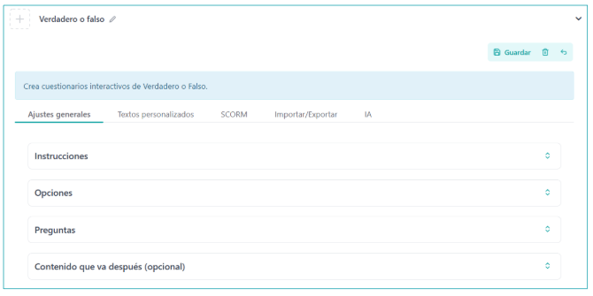
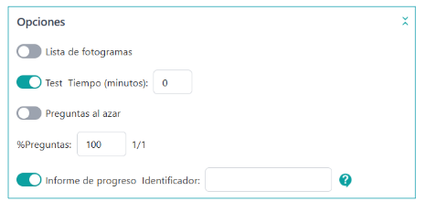
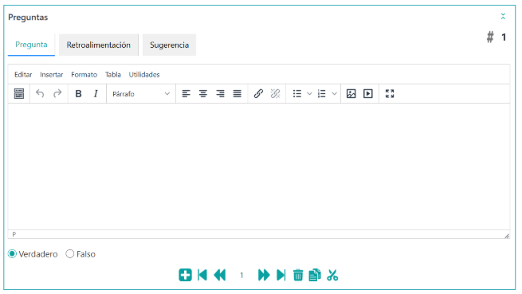
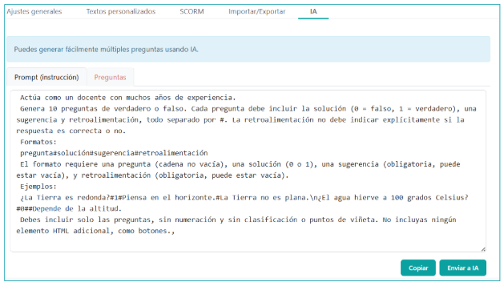

What is it?
Use this idea to create Questionaries of “Truly” or “False” There are options to show suggestions to facilitate the answers.
Examples of use
Answer all questions in the questionnaire.
by 00:00:
How is it done?
When selecting the iDevice "Truthful or False" from the list of iDivices, the following will be shown in our eXeLearning:

In the top, we will have the possibility to modify the title and assign an icon, once the iDevice is saved. Last, we’ll have the option to include a subsequent content. We see that there are a number of options and tabs, each with a different functionality that will allow us to configure our game in a very flexible way.
General Adjustments
The "General Adjustments" tab is the one that is displayed by default when creating the True or False iDevice.
In this tab we will define the activities proposed in the iDevice, instructions to perform the activity, the different configurations and options and the definitions of the words or expressions that our students should know.
- By clicking on the "Instruktions" section, a text box will be opened where we will be able to specify the instructions to follow.
- By clicking on the "Options" section we will be able to set up the list of photographs, whether we put time for the questions or not, the random questions option and the option to mark the Progress Report with your corresponding ID.

- In the Questions section we will have the option of:
- Write the questions/affirmations in a text box, marking whether it is true or false, with the option to add more questions.
- A "Retroalimentación" tab with a text box
- A tab of "Suggestions" with a text box

Scorry
In the "SCORM" tab we will be able to determine if we want to save the results obtained by our students and in what conditions we want it to do when we export our contents.
It should be noted that this option of storage It will only be available for SCORM exports and when we publish our content on platforms such as: by Moodle or other LMS platforms compatible with SCORM.
personalized texts
Table where we will be able to customize the automatic texts and messages that the iDevice generates.
Import and Export
In the “Import/Export” tab we can imported Questions compatible with this activity from txt or xml files (Moodle), or we can Exporting Questions in txt format to integrate them into other compatible activities.
IA
This tab allows you to bring questions from an AI chatbot in a simple way. So when opening it is shown to us, as an example a Prompt (model) that we can take to a chatbot that will generate questions in the appropriate format to be paste on the "Questions" tab. These questions proposed by AI will be added to the iDevice when we save ready to be used in the activity.
